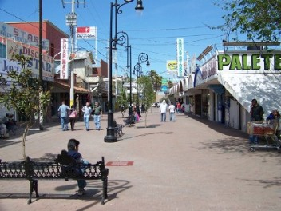
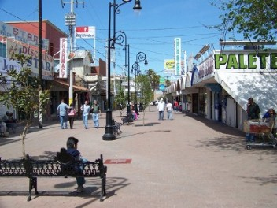

History
The independent Nogales Municipality, which included the town of Nogales, was established on July 11, 1884. The Nogales Municipality covers an area of 1,675 km². Nogales was declared a city within the Municipality on January 1, 1920.
Climate

Monuments
At the center of Nogales, there is the Plaza de Benito Juarez. Here there is a statue with two leading figures designed by Spanish sculptor Alfredo Just. This is a tribute to Mexican President Benito Juarez, and the other is the "Monument to Ignorance", where a naked man who represents the Mexican people is fighting with a winged creature that represents ignorance.
 

{kind=link}
Safe Border, Hotel & Parks
I wanted to give you an update on the conditions in Arizona/Mexico border cities, especially people outside of Arizona. First of all, the stories about the drug cartels and the violence associated with them are true, but the violence is between the various cartel members and they are in the outlying areas, NOT CLOSE to the Tourist District.
Good news to report:
The Tourist Districts are DEFINITELY SAFE for American and Canadian Tourists. All the Directory doctors and clinics are located in the safe Tourist Districts.
Nogales has just added 16 new security cameras; monitored 24/7. Within a couple of weeks the cameras will be online for all to view, there will be a link on top of the Directory “Webcams”.
The city has increased the number of regular policemen, as well as adding a special Turismo Policía in the Tourist District threefold. The traffic areas around the Tourist Districts are still congested, thus offering a high degree of security through limited mobility for a bad guy to escape.
Nogales has spent a considerable amount of money in the last 2-1/2 years turning streets into pedestrian plazas (4 so far.) See Ochoa and Pesqueira Plazas photos above.
Nogales has modernized Avenue Obregón by widening (about double) the sidewalks, limiting street vendor congestion and limiting automobile traffic.
It is very pleasant to stroll along the streets and plazas.
We are working with the Nogales Mayor’s office to provide our visitors with information about Safe events in
the Tourist Districts for day trips. Please see “Events for Fun” Button on the Directory for the upcoming
Fiestas for May, 2011. In addition to Events, all should be aware of the many bargains at the shops, stalls
and fine restaurants.
Many patients from New York, Washington and other distant places are still using their Frequent Flyer Miles
to increase their health and dental savings, don’t forget about yours.
Leaving Mexico is now easier with shorter lines, awning over the lines and new regulations that allows
anyone over 65, or impaired, to move to the front of the line.
{kind=link}